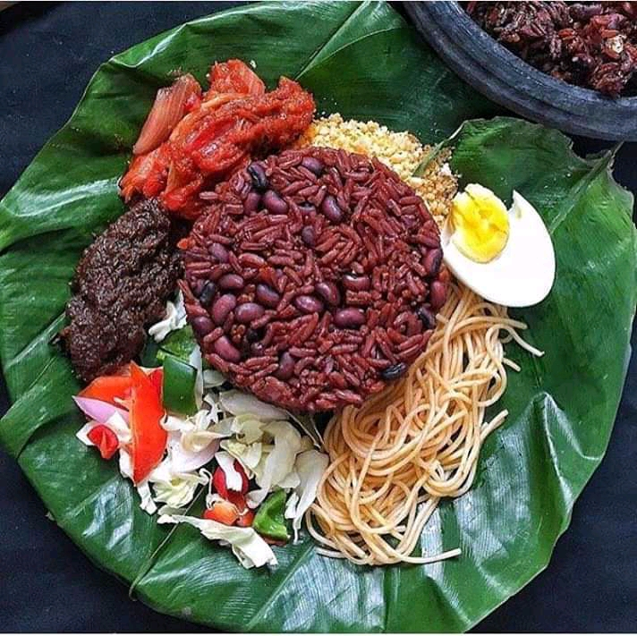

Waakye

The is an Original Ghanian made Waakye
Ingridients
Beans
Rice
Vegies
Color leafs
Hot sauce
shrimps
steps to cooking it:
Boil Beans in water for 20 minutes
Add the color leaf to water
Add the Rice to the mixture to simerfor 25 minutes